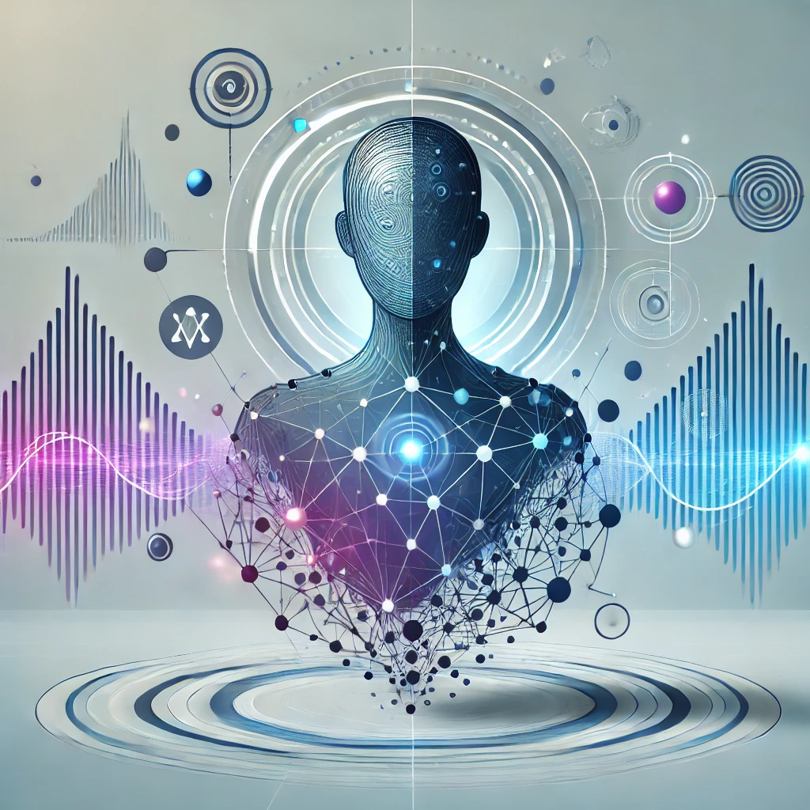

Features

Multi-Modal Access
Available on VR, desktop, and web platforms for accessibility across devices.

Immersive Visualization
Explore neural network layers, activations, and data flow in a 3D environment.

Interactive Construction
Construct, modify, and analyze neural networks in real time through intuitive 3D interactions.

Interpretability Tools
Gain insights into feature influences on predictions with integrated tools.
Robustness Analysis
Test model resilience to various attack types within the immersive environment.

AI-Assisted Analysis
Receive real-time explanations and guidance from integrated LLM-based AI assistance.